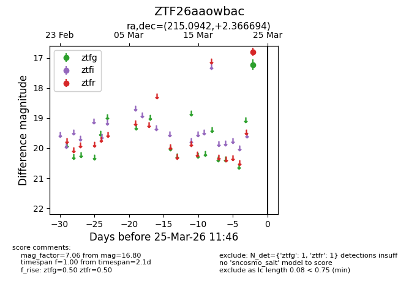
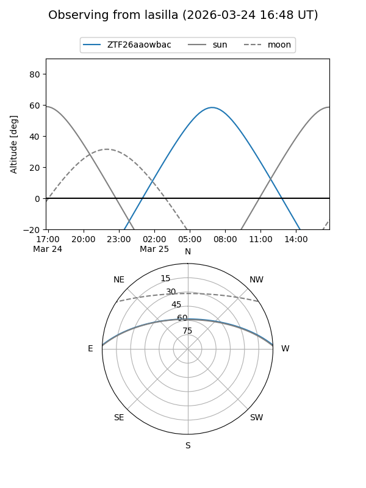
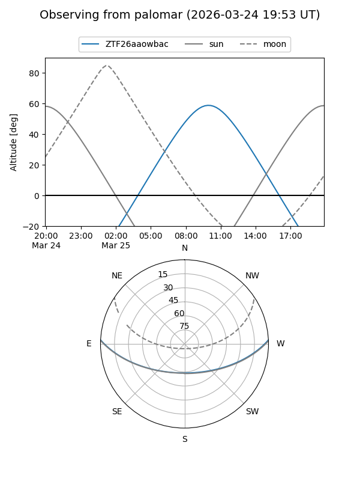

ZTF26aaowbac
Target ZTF26aaowbac at 2026-03-25 11:49
Aliases and brokers:
FINK: link
Lasair: link
ALeRCE: link
alt names
ZTF26aaowbac (ztf,fink_ztf)
Coordinates:
equatorial (ra, dec) = 215.0942,+2.36669
equatorial (HMS+DMS) = 14:20:22.60,+02:22:00.10
galactic (l, b) = (347.4148,+57.34524)
Flags:
Photometry:
last ztfg=17.23, ztfr=16.80
1 ztfg, 1 ztfr detections
Lightcurve

Visibility


Additional plots